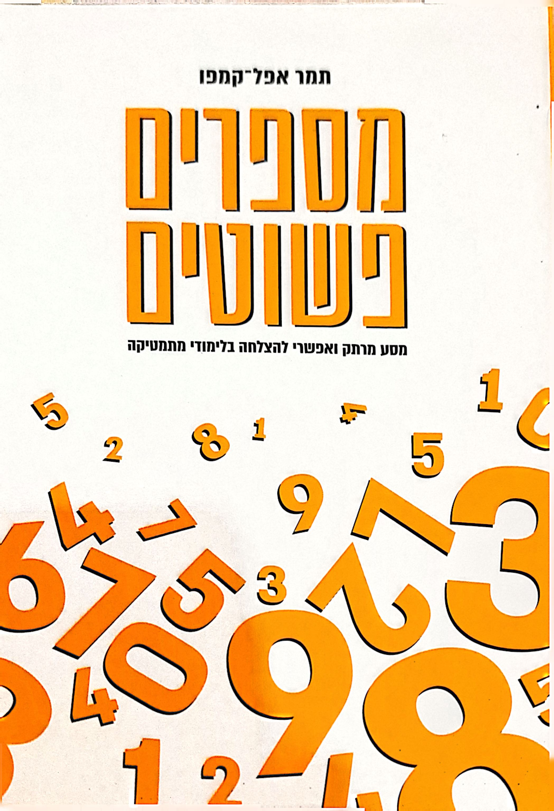

מסע מרתק ואפשרי להצלחה בלימודי מתמטיקה
"מתמטיקה היא מקצוע קשה." את הפזמון החוזר הזה שמעתי שוב ושוב במשך שנים, מתלמידים וגם ממוריהם. אמירה זו נחרתה בזיכרוני וגרמה לי להבין שמסיבה כלשהי אנשים אינם אדישים כלפי המקצוע הזה.
פגשתי ילדים, מבוגרים, תלמידים, מורים, ירקנים, מפקחי בתי ספר, סבים וסבתות שאהבו מתמטיקה, וגם קבוצה גדולה אפילו יותר של אנשים ששנאו מתמטיקה. אדם שגילה אדישות כלפי מתמטיקה לא פגשתי.
המידע הזה לא נאסף באופן שיטתי ומדעי; הוא התקבל כהתרשמות ממפגשים או בשיחות על כוס קפה עם חברים בהזדמנויות שונות, אך הוא נתן תוקף לחוויית לימודי המתמטיקה של תלמידים ברוב בתי הספר בארץ ואולי בעולם. חוויה שדורשת התייחסות. זו אחת הסיבות לכתיבת הספר.
ספר זה נכתב בהשראת ילדים שהתקשו במתמטיקה וילדים ש"שנאו מתמטיקה" וגילו לפתע שהם "עושים מתמטיקה" בהצלחה בכיתה ומחוצה לה.
בספר שילוב מרתק של היסטוריה, שירה ותאוריות חינוכיות, לצד ההיבט המעשי: איך בעצם מתרגמים מתמטיקה לשפתו האישית של כל תלמיד; מהו סוד ההוראה שמאפשר לכל אחד להרגיש מחובר לנושא הלימודי במהלך שיעור. הוא רווי אהבת אדם ומוביל למסקנה אחת: כולם יכולים להצליח במתמטיקה.
הספר מתאר מסע מרתק ומעצים של תלמידים שחוו קושי במתמטיקה, והצליחו לגלות בה עולם חדש ומופלא. דרך שילוב ייחודי של היסטוריה, שירה ותובנות חינוכיות, נחשף סוד ההוראה המשנה חיים — היכולת לתרגם מתמטיקה לשפתו האישית של כל תלמיד.
לאורך הספר נפרשת גישה חדשנית וחווייתית המאפשרת לכל תלמיד למצוא את החיבור האישי שלו למתמטיקה. התובנות והכלים המוצגים בו הם פרי ניסיון עשיר בשטח, והם מדגימים כיצד כל תלמיד יכול להרגיש מחובר ומעורב במהלך השיעור.
הספר, הספוג באהבת אדם ואמונה ביכולותיו, מוביל למסקנה אחת ברורה: כל אחד יכול להצליח במתמטיקה. זהו ספר חובה לכל מורה, הורה או תלמיד המאמין שאפשר אחרת.
הספר מיועד להורים, למורים, ליועצים חינוכיים ולכל מי שמאמין בפוטנציאל הטמון בכל אחד מאיתנו.
ספר פדגוגי מאלף, שככל שמתקדמים בו לעומקו הופך להיות ספר ביוגרפי נוגע ללב. תמר מכניסה אותנו לעולמה שלב אחרי שלב ביד מיומנת מקצועית חינוכית, הכל במידה, ברגישות, במנות קטנות ומדויקות כך שהקורא עובר חניכה. אני שמח שתורה חינוכית חיונית כשלך תקבל עוד תהודה בעולם. שמח לקרוא על גישה דיאלוגית שיש בה ראיונות מעמיקים, "גששות", וראייה עמוקה של האחר. שמח לראות את המטפורות והדיאגרמות שמסבירות באופן מעמיק את הדברים. שמח לקרוא את הסיפורים האישיים השזורים בספר.
התחלתי את הקריאה בספר כמסמך פדגוגי מקצועי, אך במהרה גיליתי יצירה ייחודית המשלבת תיאוריה וסיפור אישי באופן מרתק. הספר מוביל את הקורא במסע מרתק דרך עולם ההוראה, כשכל פרק חושף עוד רובד של תובנות וחוכמת חיים. המחברת מצליחה לארוג יחד תאוריה ופרקטיקה באופן מדויק ורגיש. הדיאגרמות והמטפורות משרתות את הבנת החומר, והראיונות המעמיקים והסיפורים האישיים מעניקים לספר נשמה ועומק. מה שמרשים במיוחד הוא הגישה הדיאלוגית העמוקה המוצגת בספר, היכולת לראות כל תלמיד, להקשיב באמת ולפתח שיח משמעותי. זוהי תורה חינוכית חיונית שראוי שתגיע לכל מורה ומחנך.
בחרתי לעסוק במסלול שיוכל להביא את הפתרון לכל העוסקים בלימודי מתמטיקה: מורים ותלמידים כאחד. בשנות מחקר בארץ ובעולם פיתחתי גישה ייחודית: "מתמטיקה בגישה הומניסטית" — שיטה שמציעה דרכי הוראה הניתנות ליישום בכיתה שלמה בעודן מותאמות לסגנון הלמידה האישי של כל ילד. כך הפכו לימוד המתמטיקה לחוויה חיובית ומעצימה.
היום אני עוסקת בהפצת רעיונות שיוכלו להיטיב באופן מיידי עם המצב הלימודי של תלמידי מתמטיקה, מגן ילדים ועד האוניברסיטה, כולל חינוך מיוחד: שיחות הורים, אבחון מקדם, חומרי הוראה למורים סקרנים, השתלמויות קצרות בזום ועוד.
תמר קמפו-אפל, אשת חינוך ומחקר, מנהלת המרכז להוראת מתמטיקה בגישה הומניסטית שנוסד ב-1987.
תמר שמה לה למטרה לשנות את האופן שבו תלמידים חווים מתמטיקה. מתוך מחקר מעמיק בארץ ובעולם פיתחה גישה ייחודית המאפשרת לכל תלמיד למצוא את דרכו האישית בעולם המספרים. מתמחה בפיתוח שיטות הוראה המשלבות את המקצועי עם האנושי, ומאפשרות למורים להגיע לכל תלמיד בכיתה. הגישה הייחודית שפיתחה הופכת את לימודי המתמטיקה לחוויה מעצימה ומשמעותית, מהנה ומעניינת לכולם, מורים ותלמידים.
כיום פועלת להנגשת הגישה ההומניסטית במתמטיקה במגוון מסגרות:
להבטיח שהאפשרות להצליח במתמטיקה מוכרת לכולם. שמורים יוכלו לדעת מה עליהם לעשות כדי שעולמם של התלמידים שלהם יהיה עולם בטוח ונעים לגדול ולהתפתח בו. שהורים יוכלו לדעת שאם הילד סובל מלימודי המתמטיקה יש פתרון פשוט למצוקתם. חשוב להפיץ את הבשורה.
צרו קשר ואשמח לספר לכם עוד על "מספרים פשוטים" ועל הגישה ההומניסטית במתמטיקה
יצירת קשר